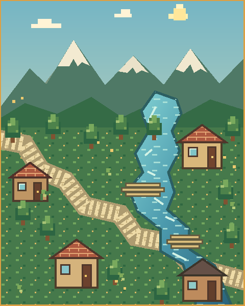
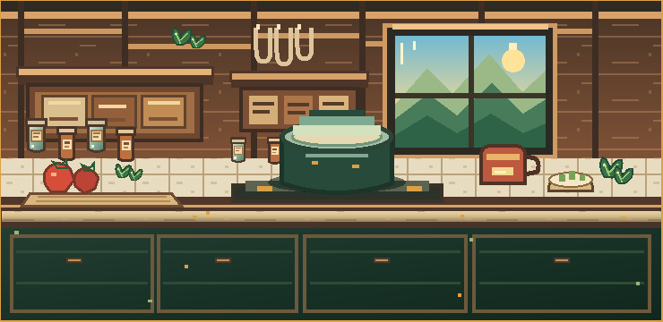

TU RUTA CULINARIA
Mapa del día
Cuatro comidas. Un recorrido. Tu inventario pone las reglas.
HOY · 4 PARADAS

TU SIGUIENTE MISIÓN
Elige el rumbo de hoy.
Una combinación de tus ingredientes, tu presupuesto y tu tiempo disponible.
0 / 4 paradas
MODO AHORRO
INGREDIENTES A MANO
KIO aporta IA, estructura y apoyo técnico; RAFA aporta la idea, la dirección creativa y las pruebas reales. La construimos juntos.
TU COCINA EXPLORABLE
Mi despensa
Toca los objetos para ajustar cantidades. La cocina es tu inventario.

La cocina de KioToca tus ingredientes. Descubre lo que puedes preparar.
DESPENSA ACTUAL
0 ingredientes registrados
¿FALTA ALGO EN LA ALACENA?
Añade un ingrediente nuevo y asígnale una cantidad aproximada.
Tu inventario se guarda en este dispositivo.
No se sube a una cuenta ni se sincroniza automáticamente con tu familia. Comparte el enlace para que cada persona tenga su propia despensa.
RECETARIO DE LA ALDEA
Descubrimientos
Recetas que puedes explorar, comparar y llevar a tu ruta.
TU RECORRIDO PERSONAL
Mi menú de hoy
Cuatro misiones, ajustadas a tu despensa y al ritmo que elijas.
ESTADO DE LA EXPEDICIÓN
Aún no has generado el menú.
0 / 4 completasMODO AHORRO